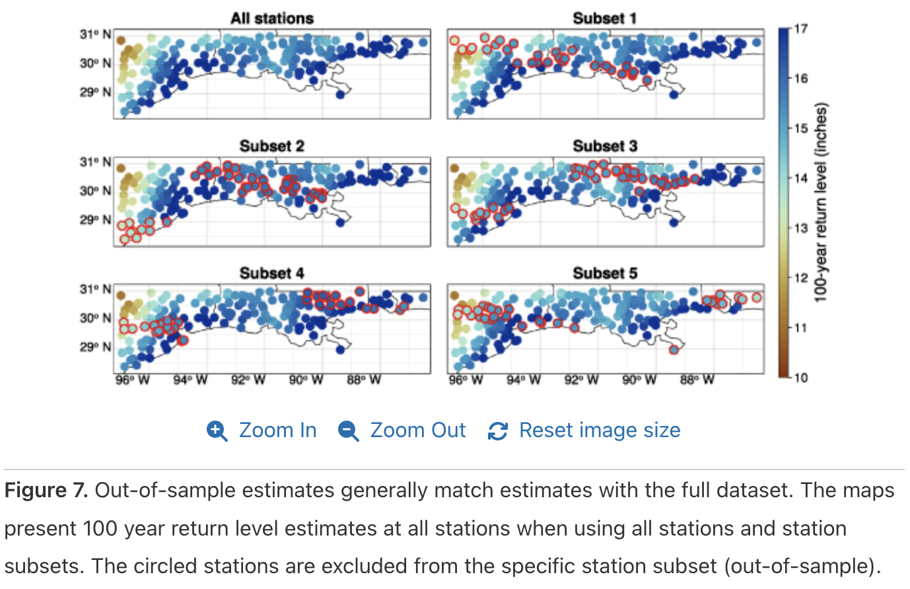

New Paper on Bayesian Spatiotemporal Analysis of Extreme Rainfall in Environmental Research: Climate
Yuchen Lu’s first-author paper demonstrates robust increases in Gulf Coast extreme rainfall using novel statistical framework.
Congratulations to Yuchen Lu on her first first-author paper, “Bayesian spatiotemporal nonstationary model quantifies robust increases in daily extreme rainfall across the Western Gulf Coast,” which has been published open-access in Environmental Research: Climate (Lu, Seiyon Lee, and Doss-Gollin 2025)!
This research represents the first step in Yuchen’s work, funded by Rice and the Texas Water Development Board, on incorporating robust estimates of nonstationarity into precipitation frequency estimates. She is currently working with colleagues at TAMU and TWDB to incorporate these insights and methods into Intensity-Duration-Frequency (IDF) curves for Texas, and we will be presenting updates at the upcoming AGU Fall meeting.
Summary
We develop the Spatially Varying Covariates Model, a novel Bayesian hierarchical framework that integrates nonstationarity and regionalization to address the challenges of estimating extreme precipitation probabilities. Traditional models like NOAA Atlas 14 assume stationarity, potentially underestimating current and future risks due to climate change. Our model leverages spatial statistics, extreme value theory, and Bayesian inference to provide robust estimates that pool information across nearby locations while allowing for temporal trends.

Applying this framework to daily rainfall data from the Western Gulf Coast, we identify robustly increasing trends in extreme precipitation intensity and variability throughout the study area, with notable spatial heterogeneity. The findings indicate a 10-35% increase in extreme rainfall over the past 80 years, with the largest changes around Houston and New Orleans. Through rigorous cross-validation, we demonstrate that our estimates are well-calibrated and reliable, even at ungauged locations.
Compared to NOAA Atlas 14, our model suggests that current guidelines may underestimate future risks in many locations, highlighting the need for updated engineering designs that account for climate change impacts. Future projections for 2050 indicate that return levels will exceed current guidelines at most locations across the region.
Shout out also to coauthor Ben Seiyon Lee for patiently sharing his insights and expertise, and to colleagues at Rice, AGU, STAHY 2023, and ER: Climate for helpful suggestions and discussion.
For more details, see here.